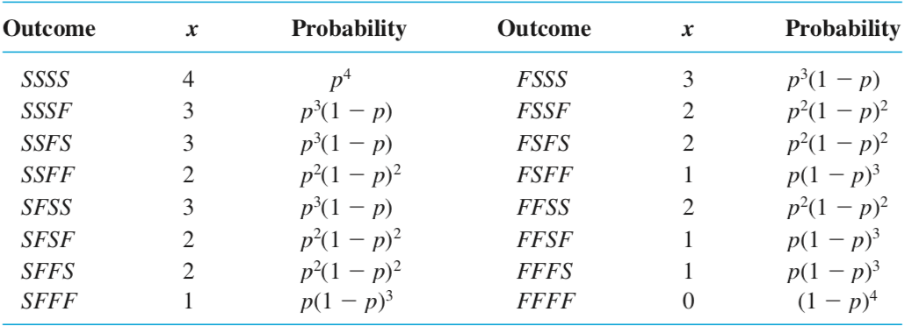
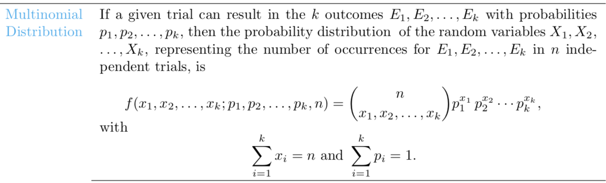

STAT 360 - Lecture 10
The Bernoulli Process:
- The experiment consists of a sequence of repeated trials.
- Each trial results in one outcome from two possible outcomes: success versus failure.
- The trials are independent, so the outcome on one trial does not affect another.
- The probability of success, $p$, remains constant from trial to trial.
Example 1
Consider the set of Bernoulli trials where 3 items are selected at random from a manufacturing process, inspected, and classified as defective or nondefective. A defective item is designated a success.
The number of successes is a random variable $X$ assuming integral values from 0 through 3. The eight possible outcomes and the corresponding values of $X$ are:
| Outcome | $NNN$ | $NDN$ | $NND$ | $DNN$ | $NDD$ | $DND$ | $DDN$ | $DDD$ |
| $x$ | 0 | 1 | 1 | 1 | 2 | 2 | 2 | 3 |
Does example 1 describe a Bernoulli process? Why or why not?
Example 2
The pool of prospective jurors for a certain case consists of 50 individuals, of whom 35 are employed. Suppose that 6 of these individuals are randomly selected one by one to sit in the jury box for initial questioning by lawyers for the defense and the prosecution. Label the $ith$ person selected (the $ith$ trial) as a success $S$ if he or she is employed and a failure $F$ otherwise.
Does example 2 describe a Bernoulli process? Why or why not?
What if we had access to 500,000 individuals, of whom 400,000 are employed, and had to sample only 10 of them?
So the Bernoulli process can be seen as either sampling with replacement from a small dichotomous population (e.g. head vs. tails from coin tosses),
Or as sampling without replacement from a dichotomous population of size $N$, such that the number of trials $n$ is at most 5% of the population size (e.g. picking 3 items from a large manufacturing assembly line in order to test for defective parts).
The Binomial Random Variable
The binomial random variable $X$ associated with a Bernoulli process (also known as binomial experiment) consisting of $n$ trials is defined as: $X \approx$ the number of $S$'s (successes) among the $n$ trials.The Binomial Distribution
If $X$ is a binomial random variable, it will depend on two important parameters: $n$ the number of trials and $p$ the probability of success.
We denote the p.m.f of a binomial r.v. by $b(x; n, p)$.
For example, consider tossing a biased coin with probability $p$ of showing $H$ead $= S$ four times:
Question: How many outcomes have 3 successes?
The Binomial p.m.f.
$$b(x; n, p) = {n \choose x}p^x(1-p)^{n-x},$$ where: $x = 0,1,2,...,n$,$n$ is the number of trials and
$p$ is the probability of success.
Example
Each of six randomly selected cola drinkers is given a glass containing cola S and one containing cola F. The glasses are identical in appearance except for a code on the bottom to identify the cola.
Suppose there is actually no tendency among cola drinkers to prefer one cola to the other, so that $p = P$(a selected individual prefers S) = 0.5. Let $X$ be the number among the six who prefer S, that is $X \sim Bin(6,0.5)$.
Compute $P(X = 3)$.
Compute $P(X \leq 5)$.
The Binomial C.D.F.
$$B(x; n, p) = P(X \leq x) = \sum_x b(i; n, p),$$ where: $x = 0,1,2,...,n$,$n$ is the number of trials and
$p$ is the probability of success.
Also good to know about...
However, we will spend more time with the binomial today!
You can read more about the multinomial distribution here.
Mean and Variance of a Binomial R.V.
(then we will do some examples!)
Let $X \sim Bin(n,p)$, then $E(X) = np$, $Var(X) = np(1-p)$
Homework problem: using the binomial p.m.f. and the definition of expectation, prove the statement above.
This link can help, if you are stuck.
Shape and Position
How do the parameters $n$ and $p$ affect the shape of the binomial distribution?
Computing Probabilities of Binomial R.V.'s
We have several ways!
- By hand
- With a calculator
- Using R, or other software
- Using a table (like $A.1$ on $pp. \ 727-727$)
Example and Homework
We will do these exercises in class: 5.11, 5.22
You will do these for homework: 5.9, 5.12, 5.18, 5.20